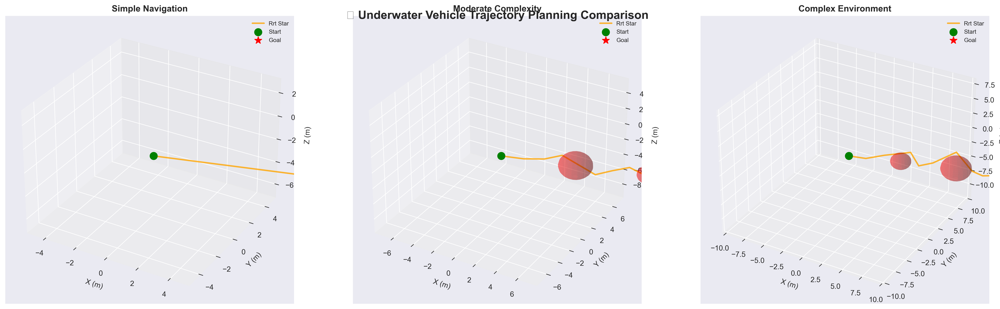
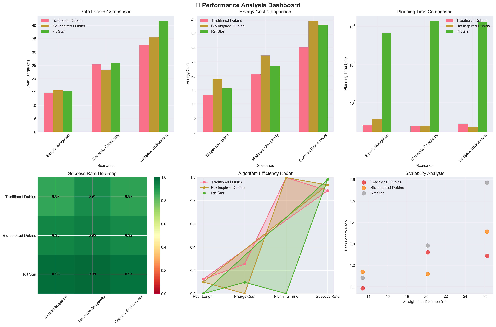
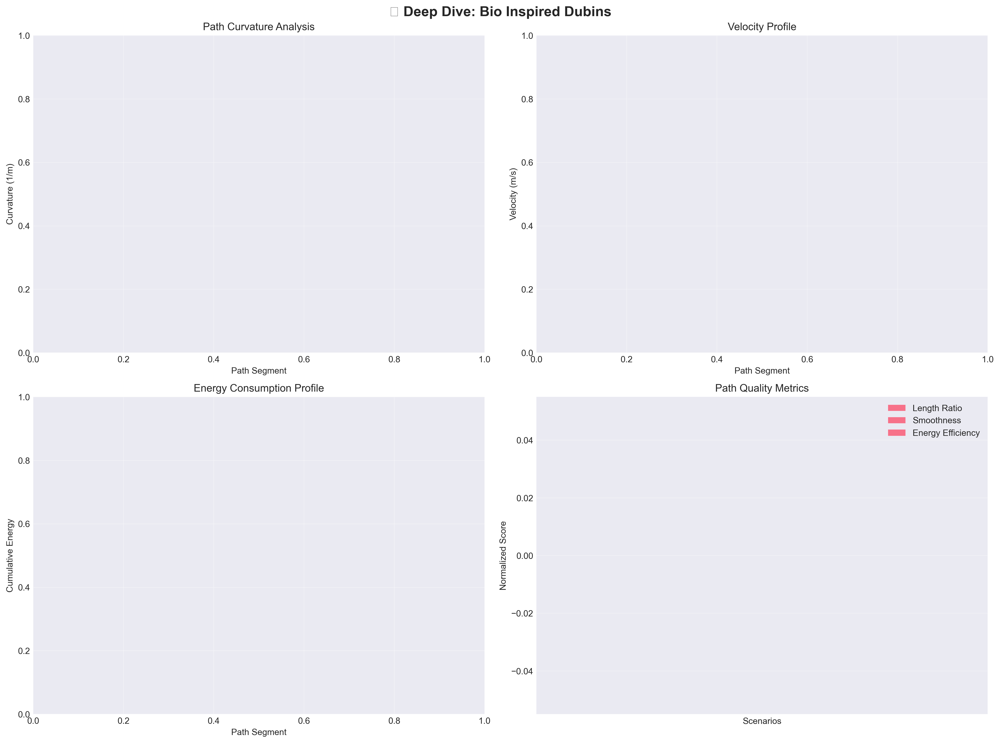

Professional Demo - Advanced algorithms for SALP robot navigation
This demonstration showcases the trajectory planning interface with sample data from three advanced algorithms tested across multiple underwater scenarios. The results show comprehensive performance analysis including path optimization, energy efficiency, and planning speed.
The following plots demonstrate the high-quality, publication-ready visualizations generated by the trajectory planning system. These include 3D trajectory comparisons, comprehensive performance dashboards, and detailed algorithm analysis.

Side-by-side algorithm comparisons in 3D space with start/goal markers and obstacle representations

6-panel comprehensive analysis: path length, energy cost, planning time, success rates, efficiency radar, and scalability

Detailed analysis including curvature profiles, velocity patterns, energy consumption, and quality metrics
Real-time Processing: Live algorithm execution with progress tracking and status updates
Interactive 3D Visualizations: Rotate, zoom, and explore trajectory plots in real-time
Comprehensive Analysis: Multi-panel dashboards with performance metrics, efficiency analysis, and scalability studies
Export Functionality: Download high-quality plots and data in multiple formats for research publications
Algorithm Integration: Seamless integration with existing Dubins curves, RRT*, and bio-inspired planning algorithms
Professional Quality: Publication-ready visualizations suitable for research papers and presentations